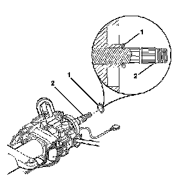
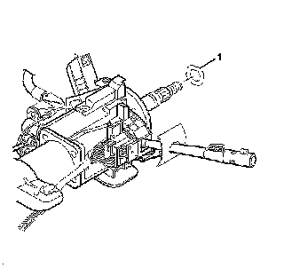
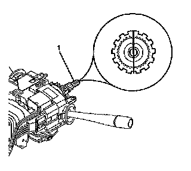
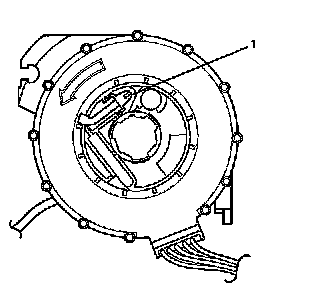

Removal and Replacement
Inflatable Restraint Steering Wheel Module Coil Replacement
Removal Procedure
Caution: Refer to SIR Caution (SIR Caution) .
1. Disable the supplemental inflatable restraint (SIR) system. Refer to SIR Disabling and Enabling (Service and Repair) .
2. Remove the knee bolster. Refer to Knee Bolster Replacement (Left Hand Drive) (Service and Repair)Knee Bolster Replacement (Right Hand Drive) (Service and Repair) .
3. Remove the steering column trim covers. Refer to Steering Column Trim Covers Replacement (Steering Column Trim Covers Replacement) .
4. Disconnect the inflatable restraint steering wheel module coil electrical connectors and disconnect the inflatable restraint steering wheel module coil electrical harness from the steering column wiring harness.

5. Remove the inflatable restraint steering wheel module coil retaining ring (1) from the upper steering shaft (2).
6. Remove the inflatable restraint steering wheel module coil from the steering column.

7. Remove the inflatable restraint steering wheel module coil washer (1) if necessary.
Installation Procedure

1. Position the block tooth on the upper steering shaft (1) to the 12 o'clock position.
2. Install the inflatable restraint steering wheel module coil washer (1) if previously removed.
Important:
* Verify that the inflatable restraint steering wheel module coil is centered.
* The inflatable restraint steering wheel module coil becomes uncentered under the following conditions:
- The steering column is separated from the steering gear and allowed to rotate.
- The spring service lock is pushed down, letting the inflatable restraint steering wheel module coil hub rotate while the inflatable restraint steering wheel module coil is removed from the steering column.
* If the inflatable restraint steering wheel module coil becomes uncentered. Refer to Inflatable Restraint Steering Wheel Module Coil Centering (Procedures) .
3. Align and install the inflatable restraint steering wheel module coil with the turn signal switch cancel cam on the steering column.

4. Remove the inflatable restraint steering wheel module coil centering tab (1) if equipped and discard it.
5. Install the inflatable restraint steering wheel module coil retaining ring (1) to the upper steering shaft (2).
Notice: Gently pull on the lower coil assembly wire in order to remove any wire kinks inside of the column assembly. Verify that there are NO kinks or bends in the SIR coil assembly wire. If a kink or bend is present, interference may occur with the shaft lock mechanism. Turning the steering wheel may cut or damage the wire.
6. Connect the inflatable restraint steering wheel module coil electrical harness to the steering column wiring harness and connect the inflatable restraint steering wheel module coil electrical connectors.
7. Install the steering column trim covers. Refer to Steering Column Trim Covers Replacement (Steering Column Trim Covers Replacement) .
8. Install the knee bolster. Refer to Knee Bolster Replacement (Left Hand Drive) (Service and Repair)Knee Bolster Replacement (Right Hand Drive) (Service and Repair) .
9. Enable the supplemental inflatable restraint (SIR) system. Refer to SIR Disabling and Enabling (Service and Repair) .